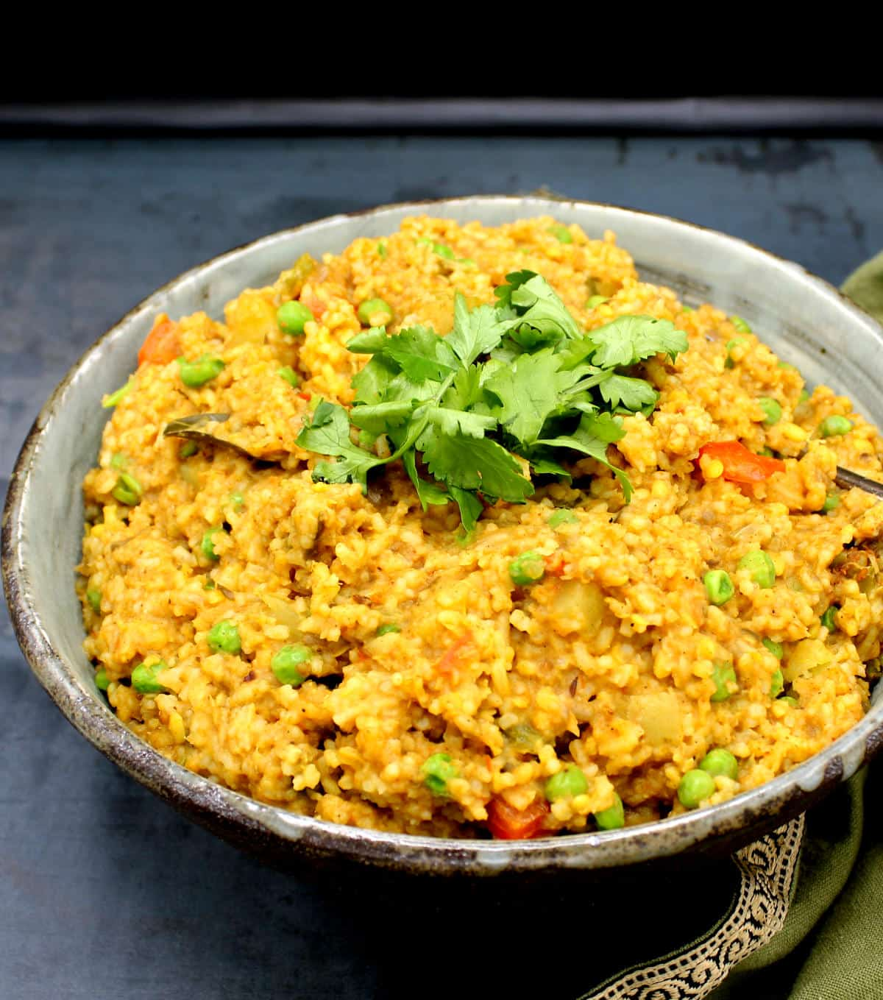

Detailed Khichdi Recipe

Photo by Vaishali on Holy Cow Vegan
About this Recipe
A comforting one-pot dish that blends rice, moong dal, and mixed veggies with spices like
turmeric and garam masala—easy to make and full of flavor.
Ingredients
- Rice, moong dal, oil (or coconut oil), cumin seeds
- Onion, curry leaves, ginger, tomato puree
- Mixed vegetables
- Turmeric, cayenne or paprika, coriander powder, garam masala, salt
- Cilantro for garnish
Steps
- Sauté onion, spices, and tomato puree.
- Add vegetables, rice, dal; mix and add water.
- Cook until soft (Instant Pot, pressure cooker, or stovetop).
- Stir in peas and garam masala; garnish with cilantro. Serve hot.
Home